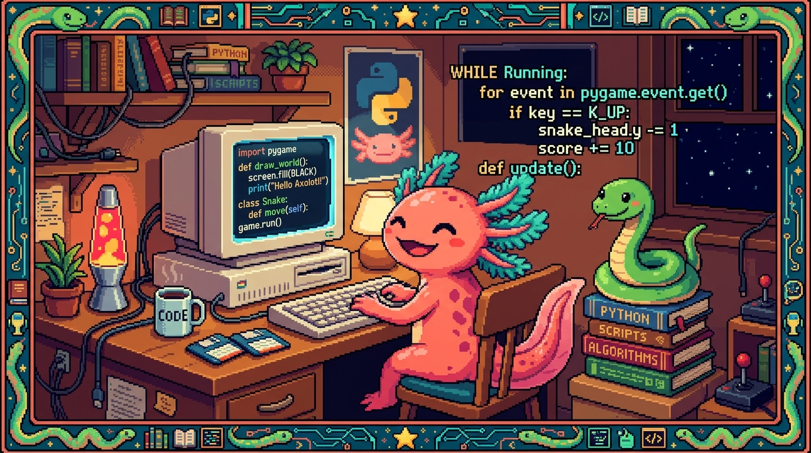

Capítulo 01 — ¿Qué es Python?

Buenas noticias: ya sabes programar. En el Módulo 03 aprendiste los conceptos (variables, decisiones, bucles, funciones). Python usa los mismos conceptos, solo que escritos de forma distinta —y, para muchos, más clara—. Este módulo te va a costar menos porque ya tienes la base; ahora solo cambias la forma de escribir.
1. Qué es Python y por qué es tan querido
🟦 ¿Qué significa? — Python
Python es un lenguaje de programación de propósito general, conocido sobre todo por lo fácil que es de leer y de escribir. Su código se parece bastante al inglés y se ahorra símbolos que en otros lenguajes solo estorban. Con él se hace de casi todo: aplicaciones, páginas web (la parte que corre en el servidor), automatización de tareas repetitivas, análisis de datos, ciencia y, muy especialmente, inteligencia artificial.
💡 Tip — ¿Por qué aprender Python si ya sé JavaScript?
Porque cada lenguaje tiene su terreno: - JavaScript manda en el navegador y en la web. - Python manda en la automatización, los datos y la IA, y es el lenguaje de apps como PolyPaw (con Flet). Manejar los dos te da un alcance enorme. Y como comparten los mismos conceptos, el segundo lenguaje siempre cuesta bastante menos que el primero.
⚠️ Cuidado — El nombre viene de un grupo de comedia, no de la serpiente
Python se llama así por Monty Python (un grupo de humoristas británicos), no por la serpiente. Aun así, el logo es una serpiente y con el tiempo se volvió su símbolo. Una curiosidad inofensiva.
2. Cómo se ejecuta Python (y cómo instalarlo)
JavaScript vive dentro del navegador. Python no: para ejecutarlo necesitas un programa llamado intérprete que instalas en tu computadora.
🟦 ¿Qué significa? — Intérprete
Un intérprete es el programa que lee tu código y lo ejecuta línea por línea. En el caso de Python, ese programa se llama precisamente
python. Lo instalas una sola vez y a partir de ahí puedes correr cualquier archivo.py.
Instalación (cuando tengas tu computadora):
1. Descarga Python desde https://python.org (botón "Download"). Si estás en Windows, marca la
casilla "Add Python to PATH" durante la instalación; eso es lo que te permite luego
usarlo desde la terminal.
2. Comprueba en la terminal: python --version (o python3 --version) debe mostrar un número.
🟦 ¿Qué significa? — REPL (la consola interactiva)
Si en la terminal escribes solo
python, entras al REPL (Read-Eval-Print Loop): una consola donde escribes una línea de Python y ves el resultado al momento, igual que la consola del navegador para JS. Va perfecto para hacer pruebas rápidas. Para salir, escribeexit().
Ejecutar un archivo: guardas tu código en un archivo, por ejemplo hola.py, y en la
terminal escribes:
python hola.py
3. Tu primer programa: print
🟦 ¿Qué significa? —
print()
print(...)muestra algo en la pantalla (en la terminal). Es el equivalente alconsole.logde JavaScript:python print("¡Hola, mundo!") print(2 + 3)Crea un archivohola.pycon esas líneas, ejecútalo conpython hola.py, y verás la salida.💡 Tip — Compara para aprender más rápido
A lo largo del módulo te irás encontrando recuadros "JS vs. Python". Úsalos: ver el mismo concepto escrito en dos lenguajes lo fija mucho mejor en la cabeza. | Idea | JavaScript | Python | |---|---|---| | Mostrar en pantalla |
console.log("hola")|print("hola")|
4. Variables: sin let ni const
🟦 ¿Qué significa? — Variables en Python
En Python no existen
let,constnivar: escribes el nombre, le asignas un valor y listo. Tampoco hace falta poner;al final.python nombre = "Edwar" edad = 25 es_programador = True| Idea | JavaScript | Python | |---|---|---| | Crear variable |const nombre = "Edwar";|nombre = "Edwar"| | Verdadero/falso |true/false|True/False(¡con mayúscula!) | | Nada / vacío |null|None|💡 Tip — Estilo de nombres en Python
En JavaScript se acostumbra el
camelCase(esProgramador); en Python la convención es otra:snake_case, es decir, todo en minúsculas y las palabras unidas por guion bajo (es_programador). Cada lenguaje tiene su costumbre, y conviene respetarla para que tu código "hable como un nativo".
5. LA regla de Python: la sangría (indentación)
De todo lo que trae Python, esto es lo que más choca cuando vienes de otros lenguajes. También es lo más importante del capítulo.
🟦 ¿Qué significa? — Sangría / indentación
La sangría es el espacio en blanco al inicio de una línea (normalmente 4 espacios). En la mayoría de lenguajes esa sangría es pura estética; en Python es obligatoria y tiene significado: es lo que define qué líneas pertenecen a un bloque.
En JavaScript, los bloques se marcan con llaves
{ }:javascript if (edad >= 18) { console.log("Adulto"); }En Python, se marcan con dos puntos:y sangría (sin llaves):python if edad >= 18: print("Adulto")Las líneas que van "dentro" delifse escriben sangradas (4 espacios). En cuanto la sangría se acaba, el bloque termina. Es más limpio, pero también más estricto.⚠️ Cuidado — La sangría inconsistente rompe el programa
Si mezclas distintas cantidades de espacios, o combinas tabuladores con espacios, Python te lanza un error (
IndentationError). La regla es sencilla: usa 4 espacios siempre. Editores como VS Code lo hacen solos cuando pulsas Tab. Este es el error número uno de quien empieza con Python; pero en cuanto te acostumbras, deja de molestar e incluso se vuelve agradable.🔎 En tu código
Abre cualquier archivo de PolyPaw, por ejemplo
main.py: vas a ver que NO hay llaves{ }marcando los bloques, solo dos puntos y sangría. Esa es la firma visual de Python.
✅ Checklist — ¿ya domino esto?
- [ ] Sé qué es Python y para qué destaca (automatización, datos, IA, apps con Flet).
- [ ] Entiendo qué es el intérprete y cómo ejecutar un
.py(python archivo.py). - [ ] Sé usar
print()y el REPL para probar. - [ ] Creo variables sin
let/consty sin;, ensnake_case. - [ ] Conozco
True/False/None(con mayúscula). - [ ] Entiendo la sangría: bloques con
:y 4 espacios, sin llaves.
🧪 Ejercicios
- Traduce a Python. Pasa esto de JavaScript a Python:
const ciudad = "San Salvador"; console.log(ciudad); - Mayúsculas. ¿Qué tiene de malo, en Python, escribir
activo = true? Corrígelo. - Sangría. Explica qué marca el final de un bloque en Python (si en JS son las llaves, en Python es…).
- Encuentra el error. ¿Por qué falla esto?
python if edad >= 18: print("Adulto") - 💻 Primer programa. Cuando tengas Python, crea
hola.pycon unprintque muestre tu nombre y, en otra línea, el resultado de7 * 6. Ejecútalo conpython hola.py.
➡️ Siguiente: Capítulo 02 — Tipos y control de flujo.